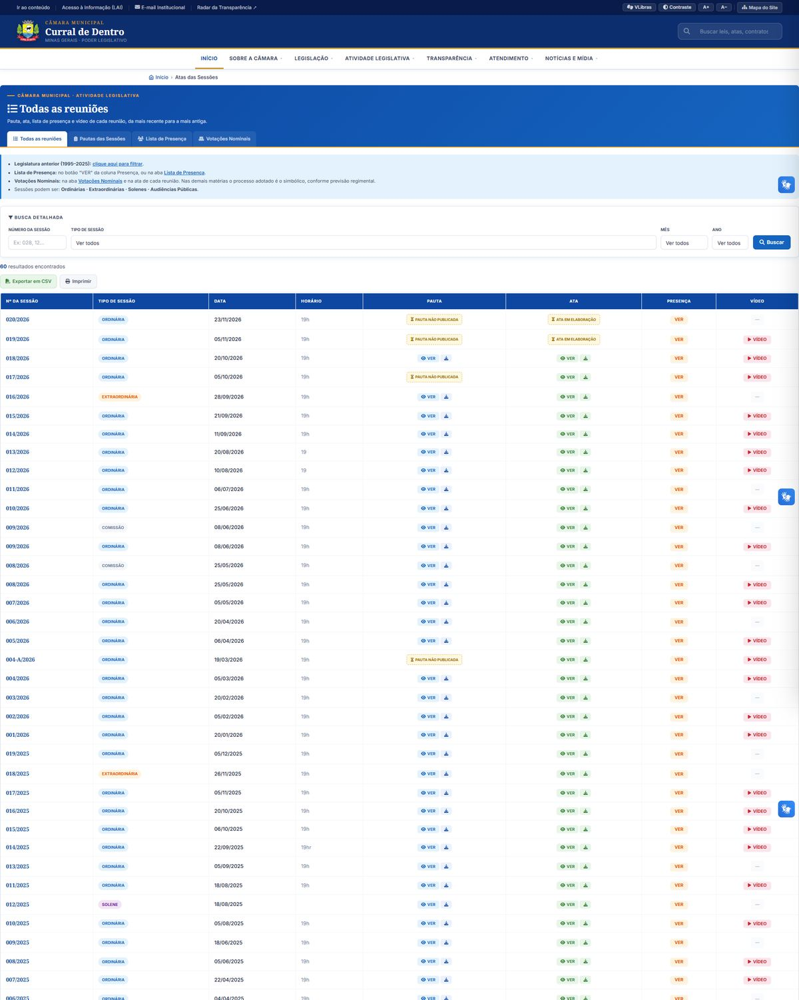
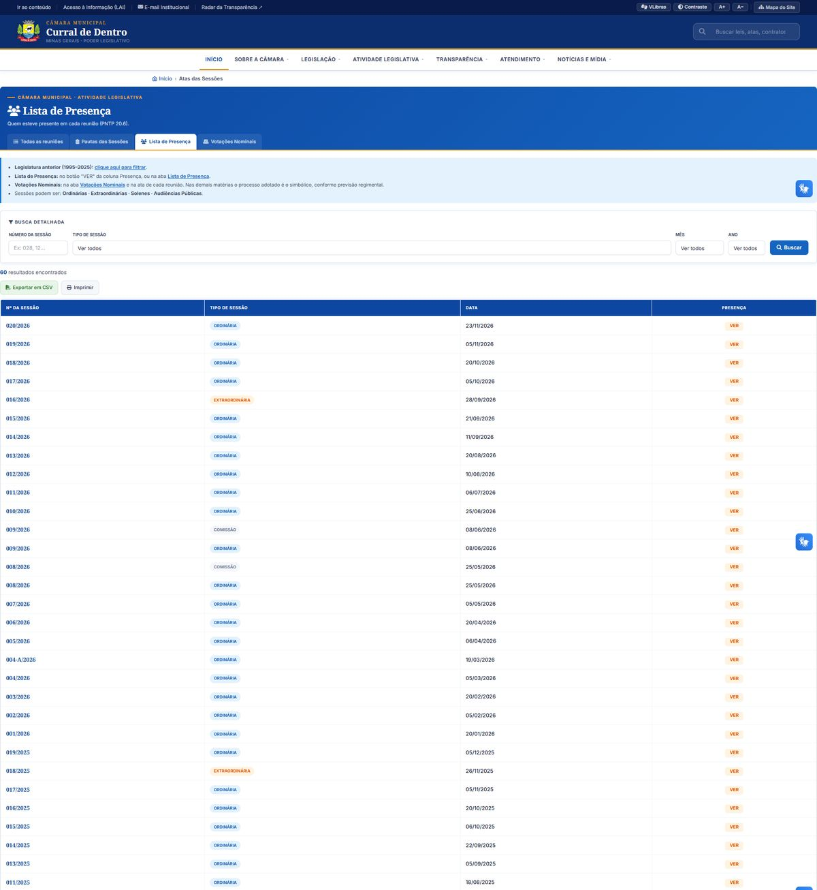
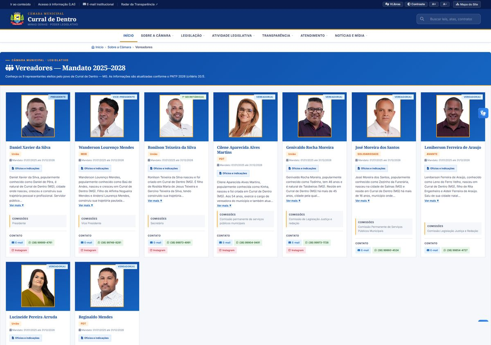
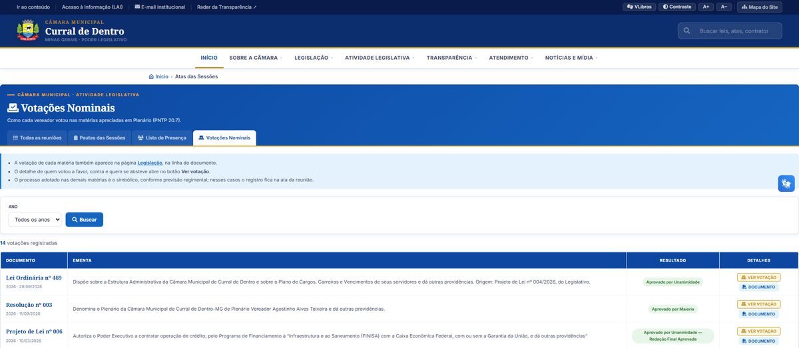
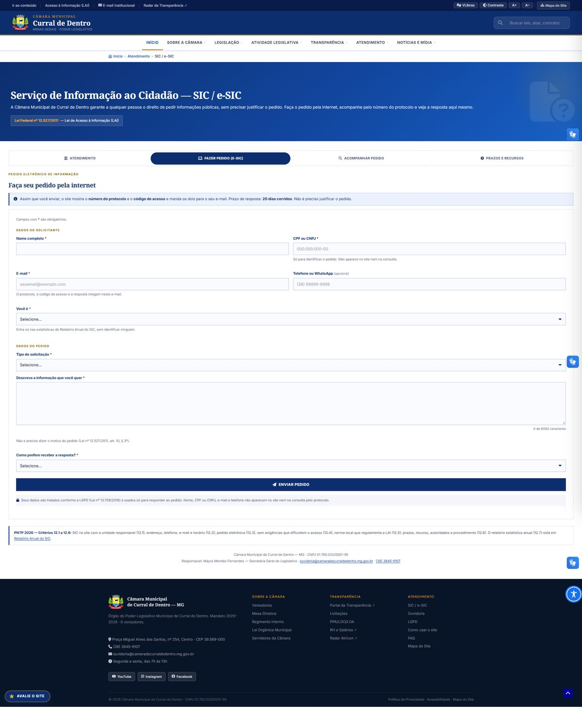
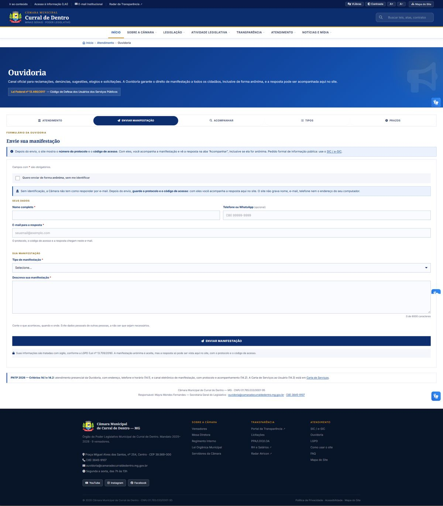
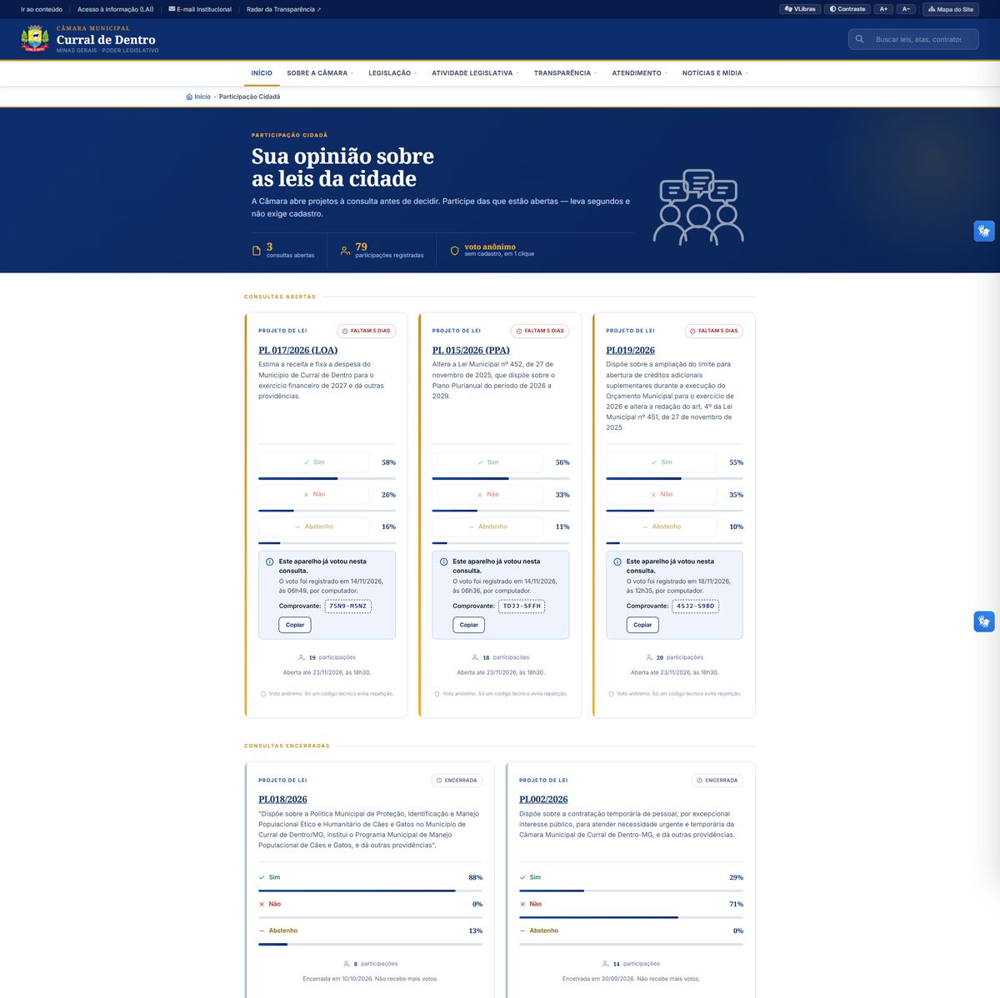
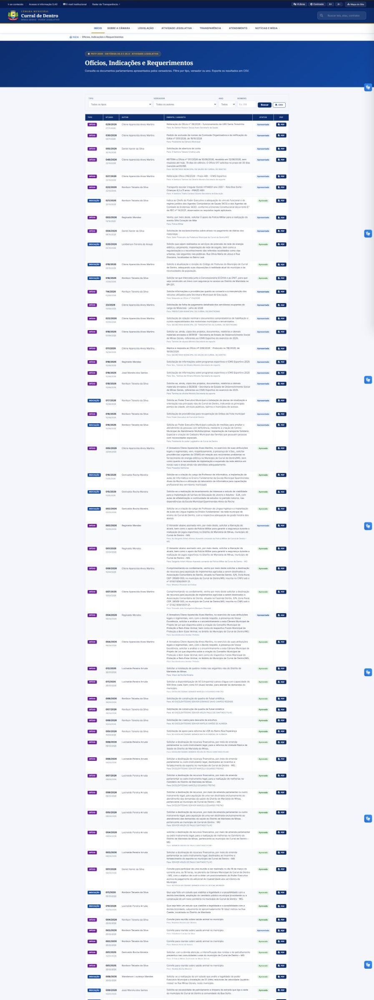
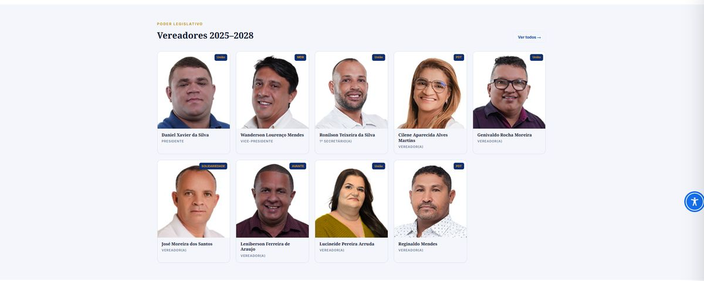

Construo e mantenho o portal da sua Câmara, organizo o acervo de documentos e acompanho cada critério de transparência até ele ser atendido.
Dados do ciclo 2026 publicados no Radar da Transparência Pública, da Atricon. Certificado a ser entregue pelo TCE-MG em cerimônia prevista para fevereiro de 2027.
O caso
Em 2025 a Câmara de Curral de Dentro ficou no nível Intermediário, sem selo. Em 2026, com o portal reconstruído e o acervo documental organizado, passou em todos os critérios essenciais.
A região, ciclo 2026
As 25 câmaras da região avaliadas no PNTP 2026, na ordem oficial do programa: primeiro o nível alcançado, depois a nota dentro de cada nível. Por isso Curral de Dentro aparece à frente de duas câmaras que tiraram nota maior — elas falharam em critério essencial e não receberam selo.
A maior nota da região. Falhou em critério essencial e ficou no nível Elevado, sem selo.
Atendeu 100% dos essenciais, mas a nota geral não alcançou a faixa do selo.
A única da região com as duas coisas ao mesmo tempo: nota na faixa e todos os essenciais.
O que está em jogo
Transparência não é cortesia com o cidadão: é obrigação legal, com prazo e com sanção. O Tribunal de Contas avalia a Câmara critério por critério, exige evidência e publica o resultado. Quem responde pelo descumprimento é quem assina.
O ente que descumpre as exigências de transparência da Lei de Responsabilidade Fiscal fica impedido de receber transferências voluntárias. Convênio em andamento para e emenda parlamentar não entra. Escapam apenas os repasses de educação, saúde e assistência social.
O Tribunal de Contas aplica multa ao agente público responsável pelo descumprimento. Não é a Câmara que paga: é a pessoa que responde pelo ato, com recurso próprio.
Falhas de publicidade ativa entram no exame das contas anuais. Contas rejeitadas por irregularidade insanável podem levar a ação por improbidade e, nos casos mais graves, à inelegibilidade do responsável.
O índice de cada câmara fica publicado no Radar, aberto a qualquer cidadão, jornalista, promotor ou adversário político — e lado a lado com o das cidades vizinhas.
Base legal: Lei Complementar nº 101/2000 (arts. 48, 48-A e 73-C), Lei nº 12.527/2011, Lei nº 8.429/1992 e Lei Complementar nº 64/1990. A aplicação de cada sanção depende do caso concreto e da decisão do órgão competente.
O portal
Acessível, leve e construído em torno do que o cidadão realmente procura — e do que o avaliador vai conferir. De quebra, cada vereador ganha o registro público do próprio trabalho: proposições com nome e data, votação nominal, presença e vídeo da sessão.
Arraste para o lado para ver mais telas.








Para os vereadores
Transparência costuma ser vendida como obrigação do Presidente. Mas o portal bem feito é, para cada vereador, o registro público e permanente do próprio mandato — pesquisável pelo eleitor, a qualquer hora.
Foto, partido, mandato, biografia, comissões e contato — e o botão que reúne todos os ofícios e indicações dele.
Cada ofício, indicação e requerimento publicado com autor e situação. O eleitor pesquisa e encontra o que o vereador pediu.
Votação nominal publicada matéria por matéria. Fim do boato sobre quem votou o quê: está escrito, com o documento anexo.
Lista de presença de cada reunião, aberta a qualquer pessoa, com o vídeo da sessão ao lado.

Quem faz o trabalho
Quem atende a sua Câmara é quem construiu o portal de Curral de Dentro, do zero.
Sou Stephen Barreto, moro em Curral de Dentro e respondo tecnicamente pelo portal da Câmara daqui desde 2025. Reconstruí o site inteiro, organizei o acervo de documentos e acompanhei a avaliação do TCE-MG critério por critério até a Câmara alcançar o nível Prata.
As empresas que vendem portal para câmaras entregam um sistema e seguem adiante. O que falta, quase sempre, não é sistema — é alguém conferindo documento por documento e correndo atrás do que ainda não foi produzido. É esse trabalho que eu faço, e faço pessoalmente: vou até a Câmara, sento com os setores e deixo a rotina montada.
Prefiro responder no WhatsApp em minutos a ter uma carteira grande e um canal de chamados.
Como funciona
O portal é onde o documento aparece. O trabalho é garantir que ele exista, esteja correto e chegue lá dentro do prazo legal.
Antes de mexer em qualquer coisa, saber exatamente onde a Câmara está. Abro a matriz do ciclo e confiro item por item contra o que está publicado hoje.
A lista do diagnóstico vira trabalho. O portal é construído ou corrigido e o acervo atrasado entra no ar, conferido.
Critério atendido que desatualiza volta a reprovar. A partir daqui o serviço é rotina: cada obrigação tem prazo, e alguém precisa estar olhando.
Chega o período de avaliação do Tribunal. É quando o trabalho do ano aparece — e quando as exigências do avaliador precisam de resposta rápida.
A atuação é técnica e operacional. A produção, a assinatura e a autorização de publicação continuam com os servidores e agentes públicos competentes. Não substitui assessoria jurídica, contabilidade, controle interno nem fiscal de contrato.
A Câmara autorizou a citação como referência e pode ser procurada diretamente pelo telefone (38) 3845-9107.
Dúvidas frequentes
Serve. Trabalho com a plataforma que a Câmara já tem e faço a interlocução técnica com o fornecedor dela. Ter sistema contratado não significa estar em conformidade: há câmaras na região com portal completo e índice abaixo de 35%, porque o que falta é documento conferido e publicado no prazo, não tela.
São os repasses de dinheiro que a União ou o Estado mandam ao município por vontade própria, fora do que já é obrigatório por lei — ou seja, fora do FPM e dos fundos constitucionais. É o dinheiro de convênio e de emenda parlamentar: a reforma da escola, a ambulância, o calçamento da rua, a quadra, o poço artesiano. Quando o município entra na lista de inadimplentes em transparência, esse dinheiro fica bloqueado até a situação ser regularizada. Só continuam entrando os repasses de educação, saúde e assistência social.
Convênio é o acordo assinado entre o município e o órgão que vai repassar o recurso, com um objetivo definido e prestação de contas. Emenda parlamentar é a verba que um deputado ou senador direciona para o município no orçamento. Os dois dependem de o município estar regular para que as parcelas sejam liberadas. Um convênio já assinado pode ter a liberação das parcelas seguintes suspensa, e a obra fica parada no meio — não porque faltou dinheiro, mas porque faltou documento publicado.
Na Câmara, em regra é o Presidente: ele é o chefe do Poder Legislativo municipal e o ordenador de despesa, quem assina e responde pela gestão da Casa. Dependendo do caso, a responsabilidade pode alcançar também o servidor formalmente designado para a função — por exemplo, quem foi nomeado responsável pelo Serviço de Informação ao Cidadão ou pelo portal. A multa aplicada pelo Tribunal é pessoal: sai do bolso de quem responde, não do orçamento da Câmara.
Pela forma que for mais simples para a Administração. Na maioria dos casos cabe em dispensa de licitação pelo valor, dentro do limite da Lei 14.133. Entrego à assessoria de licitações o memorial descritivo dos serviços, para que ela redija o termo de referência do jeito que a Casa precisa.
O diagnóstico fica pronto em poucos dias. A adequação depende do tamanho do acervo atrasado e da velocidade com que os setores entregam os documentos. A nota só muda no ciclo seguinte de avaliação, que é anual — por isso começar cedo no ciclo faz diferença.
Os setores da Câmara e os prestadores dela, como a assessoria contábil. Eu identifico o que falta, solicito formalmente, acompanho, confiro o conteúdo e publico. A cobrança formal, quando necessária, é ato da Administração — meu papel é dar à Diretoria a informação com tempo hábil para agir.
Acompanho a diligência junto com a Administração durante todo o período de avaliação, organizo as providências e registro cada contato. Atuo como suporte técnico: não represento a Câmara juridicamente nem assino documento oficial.
O diagnóstico mostra, critério por critério, o que falta para a sua Câmara — com prazo e responsável. É o mesmo levantamento que deu origem ao resultado de Curral de Dentro.